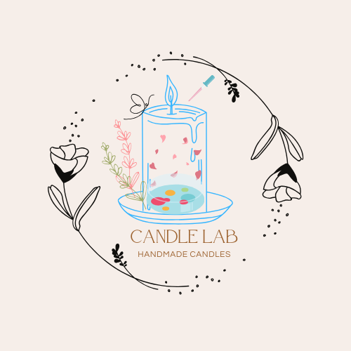

<body bgcolor="#D6EAF8"></body>
</body>
        

<strong>Design Candle Lab</strong>

<p>

  <div class="container">
    

</p>

    <p><b>Candle lab</b></p>

<pre>

</p> <i>Because the shape is so distinctive and sets our candle design apart from others, we decided to go with a round logo for our candle design.<br> 
 Additionally, the circle chain of rose flowers in our candle lab logo represents the seven fragrance flavors we will be releasing for lab candles,
<br> including kenanga smell, rose rose, night whore scent, and many more. 
<br> Because our company's candles are unique and meant for everyone, the candle design logo also signifies our own creation.</p>

    
</pre>